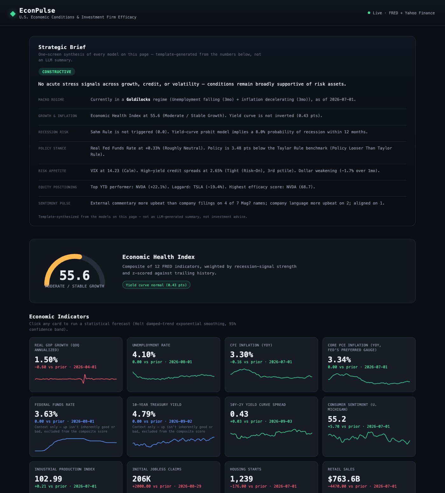
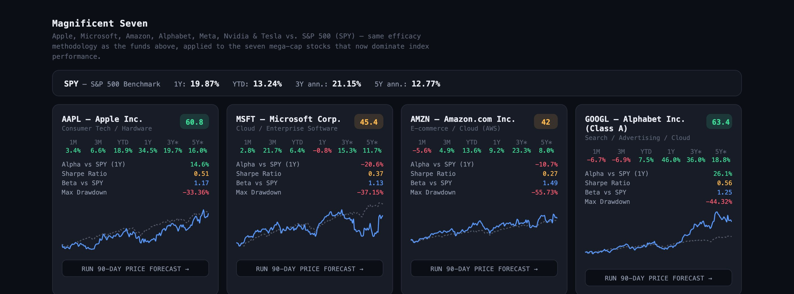
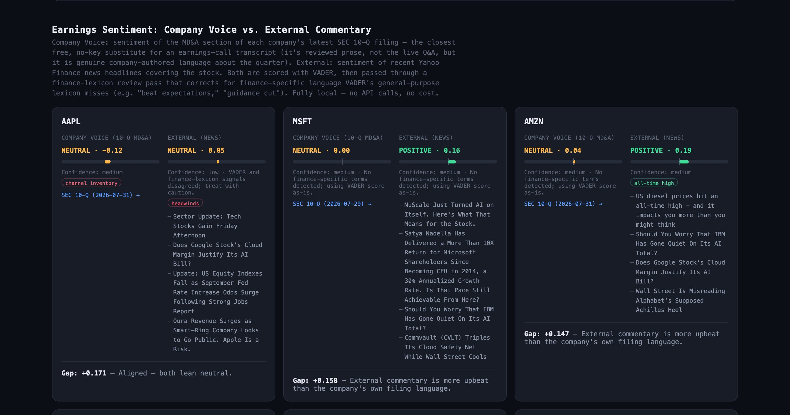
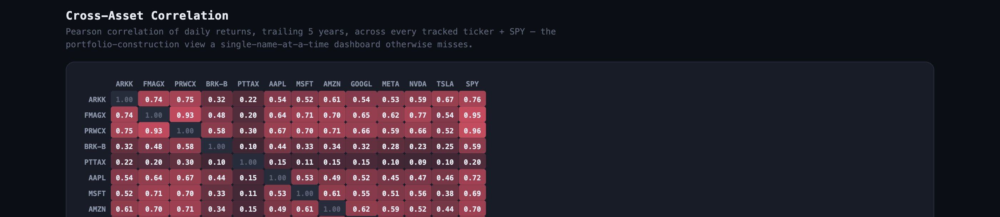

A full-stack platform that reads the macro backdrop, compares what companies say about themselves against what the news says about them, and synthesizes all of it into a single CIO-style stance — not another dashboard of unconnected charts.

Situation
Reading markets well means combining a macro view with company-specific signal — but they usually come from disconnected sources: a macro strategist's take on the cycle, and a separate equity analyst's take on individual names, never reconciled into one coherent stance.
Complication
Even where the underlying models exist — recession probability, regime detection, factor sensitivity — most tools stop at the chart and leave synthesis to the reader. And a genuinely useful read needs a comparison that isn't standard in most tools at all: what a company says about itself in its own regulatory filings, against what the external news narrative says about it.
Question
Can one platform combine macro regime detection, disclosure-vs-narrative sentiment, and factor-based equity sensitivity — then actually synthesize all of it into one decision-ready stance, instead of a wall of separate charts?
Answer
Built as a FastAPI platform across three layers:

Same efficacy methodology applied to the seven mega-cap stocks that now dominate index performance — alpha, Sharpe ratio, beta, and max drawdown against SPY.

Company Voice (SEC 10-Q MD&A) vs. External Commentary (news headlines), both scored with VADER plus a finance-lexicon correction pass — fully local, no API calls.

Pearson correlation of daily returns, trailing 5 years, across every tracked ticker + SPY — the portfolio-construction view a single-name-at-a-time dashboard otherwise misses.
Built with